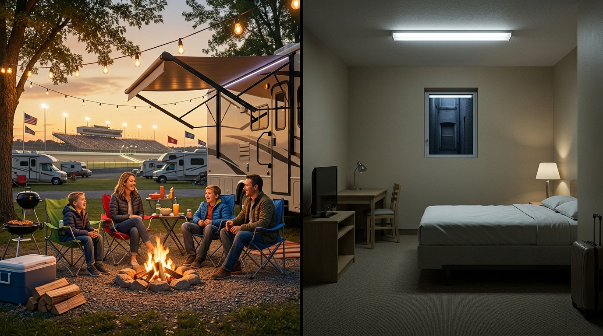

Every NASCAR fan knows the undeniable buzz that fills the air when approaching “The Last Great Colosseum.” With steep 28-degree concrete banking, high-rpm thunder, and door-to-door short track racing, a weekend at Bristol Motor Speedway is an essential bucket-list trip. Yet before you can smell burning Goodyear tires and race fuel, you face an important decision: where to stay Bristol Motor Speedway race weekend?
Do you book a standard hotel room across the Tri-Cities, or do you hitch up your trailer, pack your camping gear, and reserve a campsite minutes from the grandstands? While hotel rooms may feel like a default habit for casual travelers, veteran racegoers know that in the showdown between a campground near Bristol TN vs hotel, campers win on every single lap.
Between sky-high room rate spikes and brutal post-race highway standstills on Volunteer Parkway, hotel stays often turn what should be an epic sports adventure into a costly headache. In this complete breakdown of camping vs hotel Bristol Motor Speedway, we compare actual costs, travel times, tailgating camaraderie, family convenience, and seasonal options so you can experience race weekend the way it was meant to be enjoyed.
1. Cost Comparison: Bristol Race Weekend Hotel Prices vs. Campground Rates
The most immediate contrast begins with your wallet. The surge in Bristol race weekend hotel prices is legendary across Northeast Tennessee and Southwest Virginia.
The True Price Tag of Regional Hotels
During a standard offseason week, roadside hotels in Bristol, Johnson City, or Kingsport average $90 to $130 nightly. But once NASCAR announces dates for the spring Food City 500 or September’s Bass Pro Shops Night Race, room rates skyrocket to $200 to $400+ per night for basic double-queen rooms.
Even worse, nearly every hotel in the area enforces strict 3-night or 4-night minimums. Even if your schedule only permits attending Saturday night’s Cup Series feature, you are required to pay for Thursday through Sunday. When you combine 9.75% state sales tax, local hotel occupancy taxes, daily parking fees, and track parking passes ($40–$60/day), your final lodging tab easily exceeds $1,200 to $1,800.
💰 Budget Reality: Pocketing $800 to $1,400 with Camping
At well-maintained local campgrounds like Bristol Hilltop Camping, rates stay grounded. Tent camping spaces run approximately $30 to $50 per night, while full hookup RV sites (water, 30/50-amp power, sewer) range from $60 to $80 per night. For a 3-night stay, your lodging total sits between $150 and $240—saving you roughly $1,000 or more per group.
2. Proximity: The 0.9-Mile Trackside Advantage vs. Remote Hotels
When determining where to stay Bristol Motor Speedway guests must consider regional geography. The speedway sits along US-11E (Volunteer Parkway) in Sullivan County. Most regional hotels are concentrated 8 to 14 miles north along Interstate 81 (Exit 7 in Virginia), downtown, or 15 to 20 miles south toward Johnson City and Tri-Cities Airport.
On ordinary weekdays, a 12-mile commute down I-81 takes fifteen minutes. But on NASCAR weekend, that exact same route becomes an exhausting gridlock crawl.
By comparison, Bristol Hilltop Camping sits at 133 Hilltop Street, just 0.9 miles from the Bristol Motor Speedway main entrance and 1.2 miles from the south gate. You are so close you can hear the deep acoustic roar of engines warming up in the garage area right from your lawn chair. You wake up refreshed, enjoy a relaxed breakfast overlooking scenic mountain ridgelines, and stroll over to the gates whenever you please.
3. Traffic and Parking: Campers Walk, Hotel Guests Sit in Multi-Hour Gridlock
If you poll race fans about their worst Bristol memories, the answer is rarely the racing itself; it is the notorious post-race traffic.
Bristol Motor Speedway packs over 100,000 spectators into a dramatic Appalachian hollow. When the checkered flag falls, tens of thousands of vehicles attempt to funnel onto two-lane highways and Volunteer Parkway all at once.
The Hotel Guest's Exhausting Exit:
- Trapped in unpaved speedway parking pastures for 60 to 90 minutes before even reaching an exit road.
- Creeping at 2 mph along Volunteer Parkway in bumper-to-bumper lines, inhaling exhaust fumes while navigating police diversions toward I-81.
- Arriving at a generic hotel hallway past 1:00 AM, exhausted, frazzled, and out $50 for track parking.
The Camper's Stress-Free Stroll:
Campers near the track have a completely different post-race reality. You exit the speedway gates, bypass the idling traffic completely, and take an easy 15-minute walk back to camp. While hotel drivers are still sitting with their foot on the brake pedal in parking field queues, you have already kicked off your walking shoes, fired up the campfire, grabbed an ice-cold beverage, and started grilling late-night snacks with friends.
4. Community and Tailgating: Campground Camaraderie vs. Hotel Isolation
NASCAR is famously celebrated for its welcoming fan culture. It is an environment where supporters of rival drivers sit together, trade friendly banter, share smoker recipes, and build lifelong friendships.
When you book a hotel room, that vibrant weekend spirit ends the second your keycard clicks into the door lock. You are enclosed within four drywall partitions, quiet carpeted hallways, and silent elevator rides. You cannot fire up a charcoal grill, play a spirited cornhole tournament, or swap stories around an open fire pit under the stars.
At an authentic speedway campground, the race weekend atmosphere never stops. Smells of slow-smoked pulled pork, woodsmoke, and charred burgers drift through the crisp mountain air. Neighbors readily share tools, ice, or racing advice, and the infectious energy of Thunder Valley resonates across every row of campsites.
5. Flexibility & Comfort: Cook Your Own Food, Bring Gear, Skip Rushed Checkouts
Hotel stays constrain you to what fits inside a suitcase, while forcing you to rely on crowded commercial dining throughout race weekend.
Ditch Two-Hour Restaurant Waitlists
On major race weekends, every restaurant and steakhouse along Volunteer Parkway, Euclid Avenue, and historic Downtown Bristol State Street carries two-hour wait times. Drive-thru lanes stretch into moving lanes of traffic.
When staying in your camper, you control the menu. You can store fresh meats and cold beverages in your full refrigerator, fry skillet breakfasts of eggs and biscuits each morning on a griddle, and barbecue steaks right outside your door. You save $60 to $100 per person every day while eating higher-quality food on your own schedule.
No Harsh Sunday Morning Checkouts
After a Saturday night race that concludes close to midnight, the last thing anyone wants is a housekeeping knock at 10:00 AM demanding you vacate the room. Campgrounds allow relaxed Sunday mornings where you can sleep in, finish breakfast, pack at your leisure, and depart without feeling rushed.
6. Family & Pets: Open Mountain Air vs. Cramped Hotel Rooms
Taking the entire family to Bristol Motor Speedway is an unforgettable tradition, but stuffing parents, energetic kids, backpacks, and coolers into a single 300-square-foot hotel room can test anyone’s patience.
At a campground, kids have room to run, throw a football, toss beanbags, ride bicycles safely, and roast marshmallows over campfire embers. They experience the outdoors, make friends with neighboring kids, and create authentic childhood memories that a standard hotel room simply cannot provide.
Furthermore, finding pet-friendly lodging near Bristol during race week is extremely challenging. Most hotels prohibit animals entirely or charge non-refundable fees of $75 to $150 with strict weight caps. At Bristol Hilltop Camping, well-behaved leashed pets are warmly welcomed, saving you hundreds of dollars in hometown kennel fees while keeping your furry companions part of the family getaway.
7. The Long-Term Secret: Monthly and Yearly Camper Lot Rentals
Here is a distinct advantage no hotel can match: maintaining an affordable, permanent vacation retreat in East Tennessee.
While race weekends are electric, our primary focus at Bristol Hilltop Camping is providing scenic, full-hookup monthly and yearly camper lot rentals. For passionate NASCAR enthusiasts, outdoor recreation fans, and seasonal travelers, reserving a long-term lot transforms how you experience the region:
- Zero Lodging Scrambles: Keep your travel trailer or fifth-wheel parked and hooked up year-round. When race weekend arrives, you simply pack a bag and drive down in your regular vehicle.
- No Mountain Towing Hassles: Avoid hauling a heavy camper over steep Appalachian mountain grades on Interstate 81 twice a year, saving time and hundreds in diesel fuel.
- Two Major Races Included: Attend both the spring Food City 500 and the autumn Night Race without ever competing for scarce hotel rooms.
- Summer Recreation Gateway: Spend summers enjoying world-class fly fishing and boating on South Holston Lake, hiking scenic stretches of the Appalachian Trail, or touring the Birthplace of Country Music Museum in Downtown Bristol.
8. Comparison Table: Bristol Hilltop Camping vs. Typical Bristol Hotel
Here is how trackside camping compares directly against typical regional hotel accommodations during a Bristol NASCAR event:
| Feature / Factor | 🏕️ Bristol Hilltop Camping | 🏨 Typical Regional Hotel |
|---|---|---|
| Nightly Lodging Rate | WIN $30–$80 / night | EXPENSIVE $200–$450+ / night |
| Minimum Stay Requirement | REASONABLE Fair race weekend stay | STRICT Mandatory 3 to 4-night minimum |
| Distance to BMS Gates | 0.9 MILES Quick 15-minute walk | 8 TO 20 MILES Distant driving commute |
| Post-Race Travel Time | 15 MIN Walk back; start campfire | 2–3 HOURS Trapped on Hwy 11E & I-81 |
| Speedway Parking Fee | $0 Walk from camp | $40–$60 / DAY Plus hotel parking fees |
| Dining Flexibility | HIGH Full kitchen, outdoor grilling | LOW 2-hour waits at restaurants |
| Tailgate Atmosphere | UNMATCHED Campfires, BBQ, race fans | STERILE Isolated bedroom hallways |
| Pet-Friendly Policy | YES Leashed pets welcome | NO Prohibited or steep pet fees |
| Monthly / Seasonal Option | YES Monthly and yearly rentals | NO Cost-prohibitive extended stays |
9. When Might a Hotel Be the Better Option?
In the interest of honest advice, camping may not be ideal for every single traveler. A hotel room can be the practical choice in certain scenarios:
- Flying In Without Gear: If you are flying into Tri-Cities Airport (TRI) or Charlotte for a quick solo trip without camping equipment or an RV, a nearby hotel room eliminates the need to rent or buy gear.
- Specialized Accessibility or Medical Needs: Travelers requiring continuous medical climate control, zero-incline elevator access, or daily assisted care may find hotel facilities more suited to their clinical requirements.
- Corporate Hospitality: Company executives needing formal conference rooms, daily room service, and formal meeting venues along State Street often require traditional hotel setups.
However, for genuine race fans looking for authentic thrills, trackside proximity, tailgating camaraderie, and outstanding value, camping near the speedway is impossible to beat.
10. Discover Bristol and the Mountain Highlands from Your Basecamp
Staying at our Hilltop Street campground puts the highlights of the Southern Appalachian region within convenient reach:
- Bristol Motor Speedway & Thunder Valley: Just 0.9 miles away, giving you effortless access to NASCAR races, NHRA drag racing, and holiday light displays.
- Downtown Bristol State Street: Explore the iconic street where the yellow line divides Tennessee and Virginia. Visit craft taprooms, local diners, and the Birthplace of Country Music Museum celebrating the historic 1927 Bristol Sessions.
- South Holston Lake & River: Located fifteen minutes away, this pristine waterway offers world-renowned brown trout fly fishing, boat rentals, and scenic mountain swimming.
- Appalachian Trail & National Forests: Experience breathtaking vistas and ridge hikes through the Cherokee National Forest just a short drive up Highway 421.